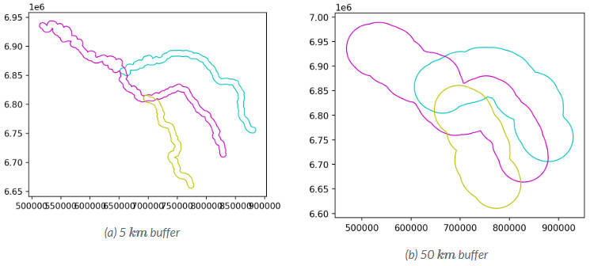
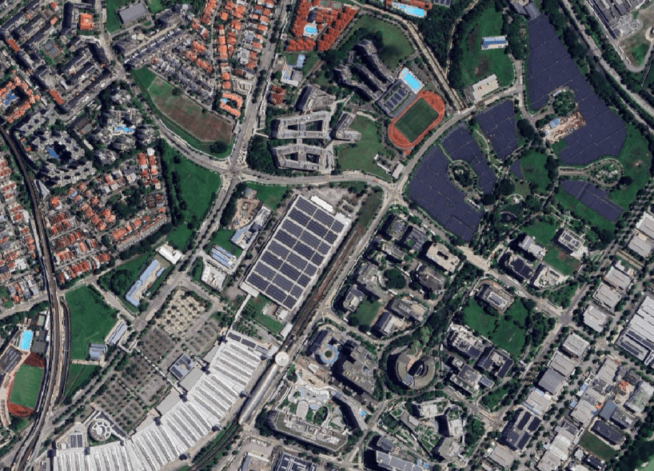

class: center <br> # Section III: Spatial Data Processing ## Spatial Data with Python [Bayi Li](mailto:barryli081@gmail.com) .toc-wrapper[ <div class="toc"> <a href="./py-bootcamp.html#3" class="toc-item">Section I: Introduction to Python</a> <a href="data.html#2" class="toc-item">Section II: Data Acquiring and Processing</a> <a href="sdp.html#2" class="toc-item">Section III: Spatial Data Processing</a> </div> ] --- ## Spatial Data Spatial data refers to data that contains location information. Spatial data is primarily represented using two major models: <div align="center"> <figure> <img src="imgs/vector_n_raster_presentation.png" width="60%"> <figcaption>Raster and vector representation of real world entities.</figcaption> <figsubcaption>Source: Unknown authour, https://gis.stackexchange.com/questions/7077/what-are-raster-and-vector-data-in-gis-and-when-to-use</figsubcaption> </figure> </div> --- ## **Geographic and Projected** Coordinate Referece Systerm (CRS) It is important that you are working with **the correct CRS**. <div align="center"> <img src="imgs/vector/gcs_pcs.png"> <br>Source: https://www.esri.com/arcgis-blog/products/arcgis-pro/mapping/gcs_vs_pcs/ </div> Anyway, with **projected CRS**, we can express the location in the **unit: metres**. *Note:* You can go to this website: [Interactive Album of Map Projections 2.0 (psu.edu)](https://projections.mgis.psu.edu/), check the difference of projected CRSs. Different CRS may introduce bias. For example, you can go to [How big the world actually is: The true size](https://www.thetruesize.com/) to check the distortion it gives to real size. --- ## **Geographic and Projected** Coordinate Referece Systerm (CRS) EPSG is the unique ID linked to a specific coordinate reference system. The common coordinate systems and their EPSG codes - EPSG: 4326 - EPSG: 3857 - EPSG: 7789 Recommended EPSG codes for Singapore: [Coordinate reference systems for "Singapore" (epsg.io)](https://epsg.io/?q=Singapore) --- ## Vector Data There are three main types: 1. **Point**: (x, y) 2. **Line**: A sequence of points 3. **Polygon**: A closed line <div align="center"> <figure> <img src="imgs/vector/points-lines-polygons.png" width="60%"> <figsubcaption>Source: https://michaelminn.net/tutorials/arcgis-pro-terrain/</figsubcaption> </figure> </div> Open [3-01_vector.ipynb](https://github.com/BayiLi081/GIS-training/blob/py-bootcamp/jupyters/3-01_vector.ipynb) with Google Colab. --- .right_half[ <figure> <img src="imgs/vector/what_is_shp.jpg" width="50%"> </figure> <figcaption>An example of Esri Shapefile.</figcaption> <br> | File | Purpose | Required | | --------- | -------------- | ----------------- | | .shp | Geometry | Yes | | .shx | Geometry index | Yes | | .dbf | Attributes | Yes | | .prj | Projection | No (but critical) | | .cpg | Text encoding | No | | .sbn/.sbx | Spatial index | No | | .xml | Metadata | No | ] ### Common spatial vector data formats Esri Shapefile A full Esri Shapefile is not one file. It is a set of files that must stay together in the same folder. **`.shp`** * Stores the geometry (points, lines, or polygons). **`.shx`** * Index file. **`.dbf`** * Attribute table. * Stores non-spatial data (names, IDs, values). **`.prj`** * Stores the coordinate reference system (CRS). * Without it, the data has no defined projection. --- .right_half[ <figure> <img src="imgs/vector/what_is_geojson.jpg" width="100%"> </figure> <figcaption>An example of GeoJSON.</figcaption> ] ### Common spatial vector data formats GeoJSON - A single text file: Easy to open, share, and inspect. - Human-readable (JSON format) - Designed for the web: Works well with JavaScript, Python, and web maps. - Slower and heavy for large datasets. Best for small to medium data. --- ### Common spatial vector data formats KML (Keyhole Markup Language) - A single text file based on XML. - Designed for visualisation, not analysis. - Closely linked to Google Products. - Uses WGS84 (lat–lon) only <iframe src="https://www.google.com/maps/d/u/0/embed?mid=1821_umakbckIqqQrcKP2bU-n7vkvGwA&ehbc=2E312F" width="100%" height="280"></iframe> --- ### Read Local Files as GeoDataFrame ```python file_path = "path_to_file/your_geospatial_data" file_data = gpd.read_file(file_path) ``` Refer to [Official Documentation: Read files](https://geopandas.org/en/stable/docs/reference/api/geopandas.read_file.html) ### Save GeoDataFrame as Local Files Usually to specify a driver when writing ```python file_path = "path_to_file/your_geospatial_data" # 1. Save as ESRI Shapefile file_gpd.to_file(f"{file_path}.shp", driver="ESRI Shapefile") # 2. Save as GeoJSON file_gpd.to_file(f"{file_path}.geojson", driver="GeoJSON") # 3. Save as KML (requires fiona support) file_gpd.to_file(f"{file_path}.kml", driver="KML") ``` Refer to [Official Documentation: Write files](https://geopandas.org/en/stable/docs/reference/api/geopandas.GeoDataFrame.to_file.html) --- name: buffering ## Buffering .left_half[ Buffers are common vector analysis tools used to **address questions of proximity** in a GIS and can be used on points, lines, or polygons <div align="center"> <figure> <img src="imgs/vector/buffer.png" width="100%"> <figcaption>Different types of spatial relations based on two Polygon geometries.</figcaption> <figsubcaption>Source: Egenhofer et al. (1992) and https://pythongis.org/part2/chapter-06/nb/05-spatial-queries.html</figsubcaption> </figure> </div> ] .right_half[ ### Buffering with Python ```python river_buff_5km = river.buffer(5000) river_buff_50km = river.buffer(50000) ``` <figure> <p></p> </figure> <figcaption>Source: https://py.geocompx.org/04-geometry-operations</figcaption> ```python seine_buff_5km.plot(color='none', edgecolor=['c', 'm', 'y']); seine_buff_50km.plot(color='none', edgecolor=['c', 'm', 'y']); ``` ] --- .right_half[ <figure> <img src="imgs/vector/overlay_bool.jpg" width="100%"> </figure> <figcaption>Pairwise geometry-generating operations</figcaption> ] ### Overlay with Python .left_half[ [Table Join](data.html#join) - A and B (Inner Join) ```python x.intersection(y) ``` - A or B (Full Join) ```python x.union(y) ``` - A not B (Left Join) ```python x.difference(y) ``` - A xor B ```python x.symmetric_difference(y) ``` ] --- .right_half[ <figure> <img src="imgs/distance/different_type_distances.jpg" class="zoomable" width="100%"> <figcaption>Different Type of Distance.</figcaption> <figsubcaption>Source: 10.1186/1476-072X-7-7</figsubcaption> </figure> ] ## Distance - Manhattan Distance rarely used: it only applies to a perfect grid street pattern - Euclidean Distance simple and intuitive - Network-based Distance follows real streets .clear[ ] Open [3-02_distance.ipynb](https://github.com/BayiLi081/GIS-training/blob/py-bootcamp/jupyters/3-02_distance.ipynb) with Google Colab. --- ### Route Query using OneMap OneMap has different routing options including public transport, drive, walk and cycle. .left_half[ [Public Transport](https://www.onemap.gov.sg/apidocs/routing/#publicTransport) ```python import requests url = "https://www.onemap.gov.sg/api/public/routingsvc/route?date=11-10-2025&mode=TRANSIT&maxWalkDistance=1000&numItineraries=3&routeType=pt&time=11%3A19%3A47&start=1.3081592%2C103.8551479&end=1.2739864%2C103.8012642" headers = {"Authorization": "**********************"} response = requests.request("GET", url, headers=headers) print(response.text) ``` ] .right_half[ [Walk/Drive/Cycle](https://www.onemap.gov.sg/apidocs/routing/#walkdrivecycle) ```python import requests url = "https://www.onemap.gov.sg/api/public/routingsvc/route?start=1.319728%2C103.8421&end=1.319728905%2C103.8421581&routeType=walk" headers = {"Authorization": "**********************"} response = requests.request("GET", url, headers=headers) print(response.text) ``` ] --- ### Network-based Route V.S. OneMap Queries Route <figure> <p></p> </figure> --- ## Mapping .left_half[ ### Static Maps (Optional) Static Mapping is best for scenarios where a fixed image is sufficient, such as reports, presentations, and printed materials. <figure> <img src="imgs/vis/staticmapping_example.png" class="zoomable" width="100%"> </figure> Open [3-03-01_staticmapping.ipynb](https://github.com/BayiLi081/GIS-training/blob/py-bootcamp/jupyters/3-03-01_staticmapping.ipynb) with Google Colab. ] .right_half[ ### Interactive Maps Interactive Mapping is best for scenarios where user engagement and interaction with the map are beneficial, such as web applications, dashboards, and exploratory data analysis. <iframe src="./map.html" width="100%" height="280"></iframe> Open [3-03-02_interactivemapping.ipynb](https://github.com/BayiLi081/GIS-training/blob/py-bootcamp/jupyters/3-03-02_interactivemapping.ipynb) with Google Colab. ]